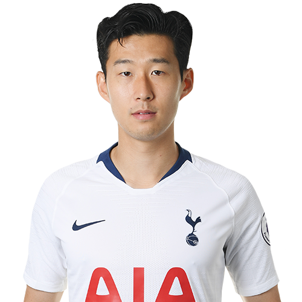

- 프로필
- 수상 경력
- 포토

강원도 춘천시 출신이다.[11] 16세 어린 나이부터 분데스리가 함부르크 SV로 스카웃 될 정도로 활약하며 이미 떠오르는 차세대 유망주로서 상당한 실력을 인정받았으며, 이른 나이에 대표팀에 1군으로 뽑혀 큰 활약을 하면서 두각을 드러내며 팬들의 관심을 받게된다.
2009년 U-17 청소년 국가대표팀을 거치고, 2010년 함부르크 SV와 4년 계약과 함께 역대 최고 수준의 초특급 유망주라는 립서비스를 받으면서, 또한 해외에서도 상당한 기대를 갖고 있음을 드러냈다. 그리고 2010년 10월 30일, FC 쾰른과의 2010-2011 분데스리가 10라운드 경기에서 첫 데뷔골을 장식하면서 새로운 스타 탄생을 예고했다. 동시에, 함부르크 SV의 레전드 마니 칼츠의 최연소 골 기록을 갱신하는 신기록을 선보이는 등, 국내 축구 팬들은 물론이고 독일 현지에서도 존재감이 강한 활약을 보여주면서 폭발적인 반응을 얻었다.[12]
그리고, 독일 분데스리가의 명문구단 TSV 바이어 04 레버쿠젠으로부터 구단 역대 최고 이적료 기록을 경신하면서 영입을 하는 등, 한국에서는 쉽게 볼 수 없는 차세대 태극전사의 에이스로 전세계의 언론으로부터 주목을 받기 시작했다.[13] 그리고 2015년 8월 28일, 이적료 3,000만 유로/2,200만 파운드(한화 408억 추정치)를 기록하며 잉글리시 프리미어리그의 토트넘 핫스퍼와 5년 계약을 확정지으면서 아시아 축구선수 중에서 역대 최고 이적료 기록을 경신했다.[14]
최근에는 한국과 영국에 많은 팬층을 이루고 있지만 케인, 에릭센, 델레 알리 등의 다른 선수에게 스포트라이트를 빼앗기거나, 비교적 낮은 출전 시간, 해외 인지도 부족으로 영국 방송매체인 BT Sports 등에 과소평가된 선수 베스트 11에 올랐다.[15] 한편, 케인과 마우리시오 포체티노 토트넘 감독은 관련 인터뷰에서 언론은 진정한 가치를 평가할 수 없다며 팀 내에서 그의 영향력을 칭찬했다.[16]
손흥민이 어린 나이에 이러한 엄청난 재능을 보여줄 수 있었던 것은, 그의 아버지 손웅정의 교육의 모토와 같은 '열린 교육' 때문이라고도 할 수 있다.
현재, 축구 아카데미를 운영하고 있는 손웅정은 젊어서 축구 선수로 활약했으나 안타깝게도 부상으로 인해 선수 생활을 일찍이 마감하게 되었는데, 그 계기로 스페인, 독일, 브라질 등 축구 선진국을 돌아다니면서 그들의 유소년 축구를 접했다. 지도자 생활을 시작한 손웅정은 춘천 FC를 만들어 승패에 목숨을 거는 축구가 아닌 '즐기는' 축구를 모토로 자기 자식들을 가르치기 시작했다. 특히 그의 차남 손흥민은 축구선수 지망생들이 다 가는 축구 교실을 안 가고 아버지의 개인 교습을 받아 초등학교 시절부터 직접 개인기와 탄탄한 기본기를 차근차근 익혔다. 기본기를 다지기 위해 혹독한 훈련도 마다하지 않았다고 한다.